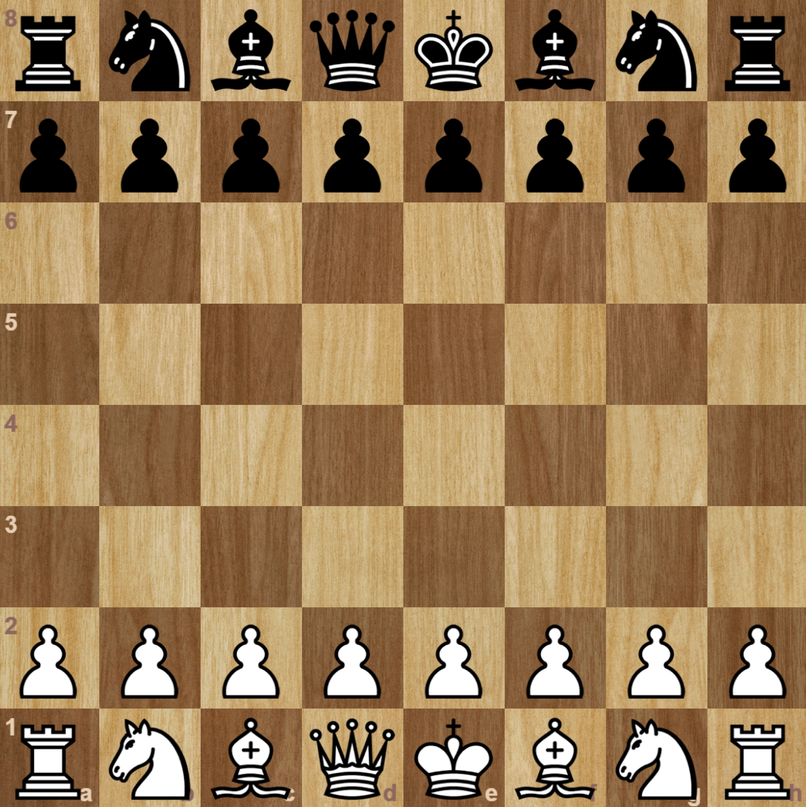

The World of Chess Strategy
Chess is not just a game, but a true art of calculation, logic, and psychological resilience. Our resource will help you master this ancient game step by step.

Why Should You Play Chess?
Regular chess training improves memory, develops critical thinking, and teaches you to make responsible decisions under time pressure.